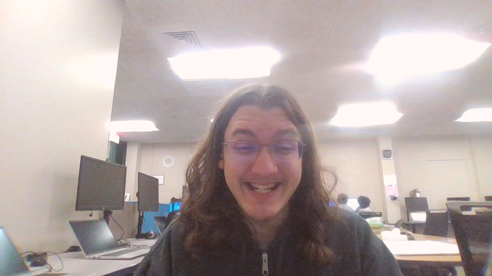

About Me
My name is Joshua Phillips. I was born in (somewhere), Michigan but was raised in Kalkaska. We eventually moved closer to Alba schools, which is where I currently attend school. I am in 11th grade and decided I would go to Web and App development as my CTC class, which was required since my main school doesn't currently have enough staff to teach us in the mornings.
I chose Web and App Development because it sounded interesting and not many other programs were available because my original form got lost somewhere and I didn't get much of a choice. Even so, I'm happy to have this class instead because it's entertaining and not really that hard. I have an issue where writing is difficult because my hand shakes 24/7 and it makes my hand ache which results in my hand-writing being abysmal. As for what I'm going to do after high school, I'm going to go live at a friend's house. (We've been planning this for YEARS.)